en Reflecteren
en Begrijpen
Plannen
Presenteren
anderen
Leren over jezelf en Reflecteren

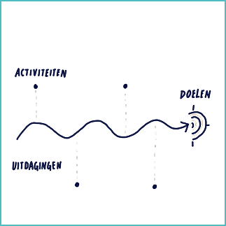
Roadmap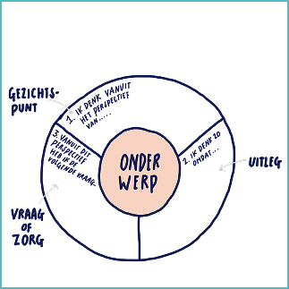
Cirkel van gezichtspunten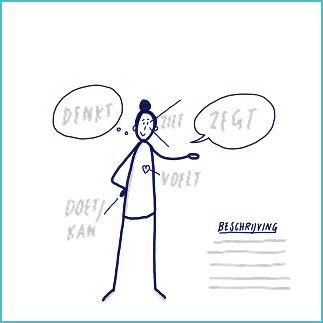
Over 5 jaar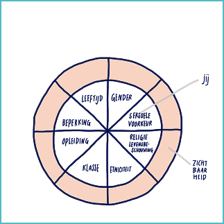
Diversiteitscirkel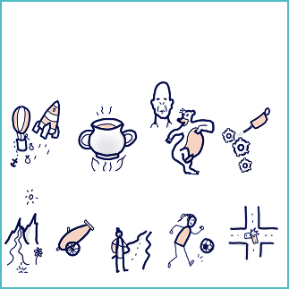
Metafoor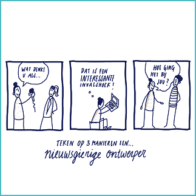
Kwaliteiten tekenen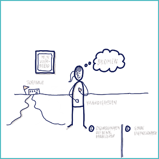
Mijn gebruiksaanwijzing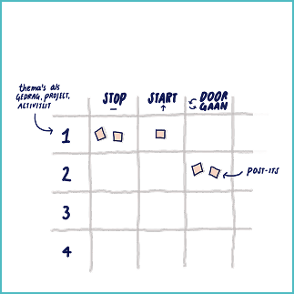
Stop-start-doorgaan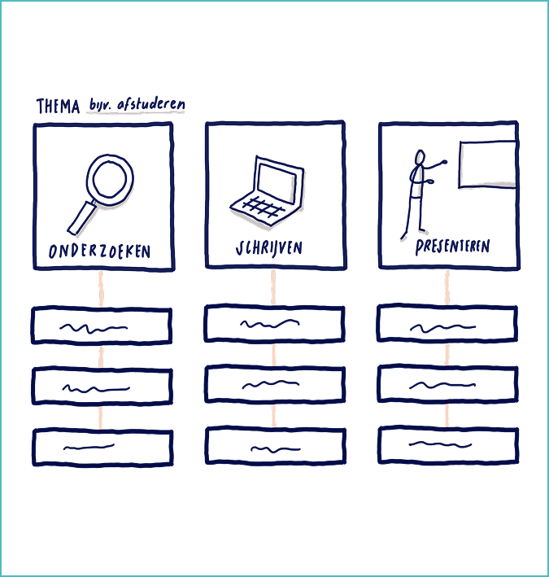
StroomschemaWelke methodes kan ik gebruiken om een reflectief vakproces visueel te maken?
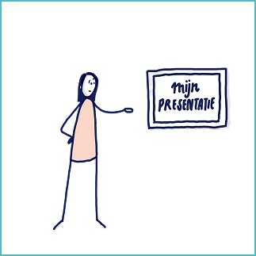
Reflecteren op een situatie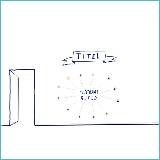
Sketchnote op de muurLeren over jezelf en Reflecteren
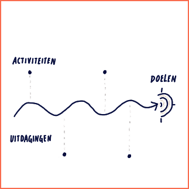
Roadmap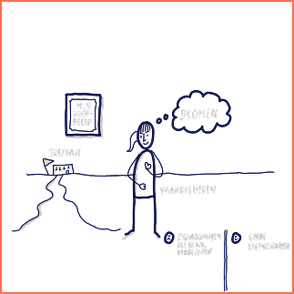
Cirkel van gezichtspunten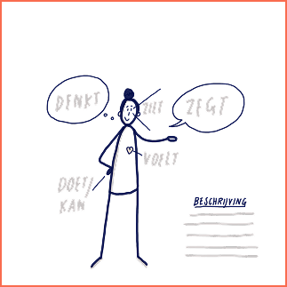
Over 5 jaar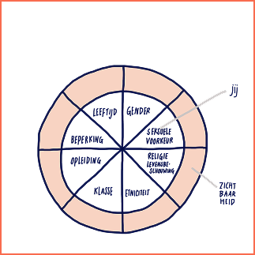
Diversiteitscirkel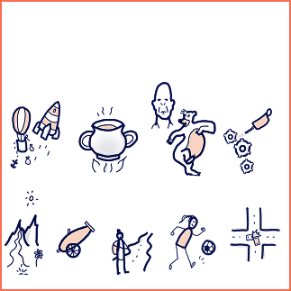
Metafoor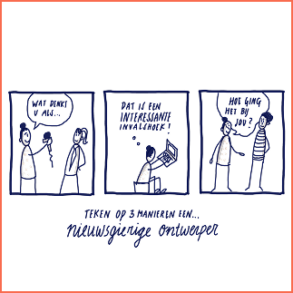
Kwaliteiten tekenen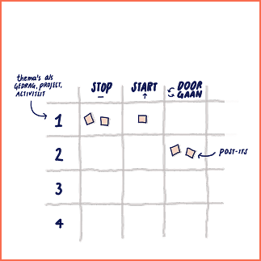
Stop-start-doorgaan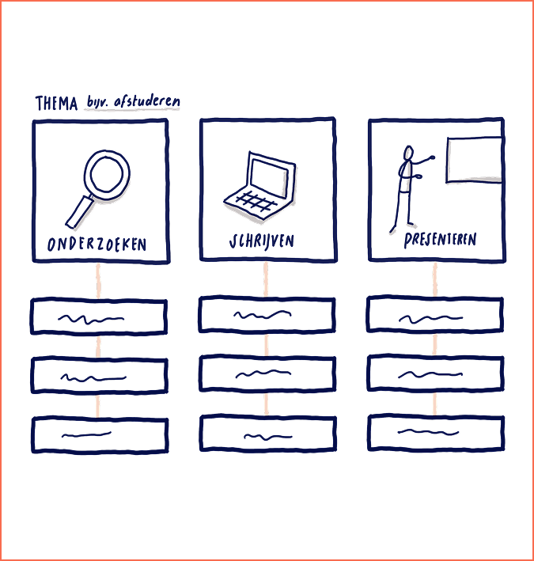
StroomschemaWelke methodes kan ik gebruiken om een reflectief vakproces visueel te maken?
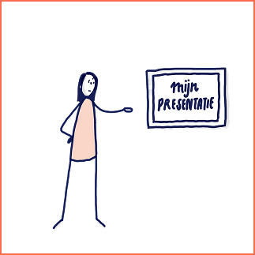
Reflecteren op een situatie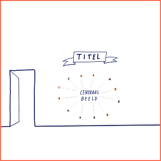
Sketchnote op de muur